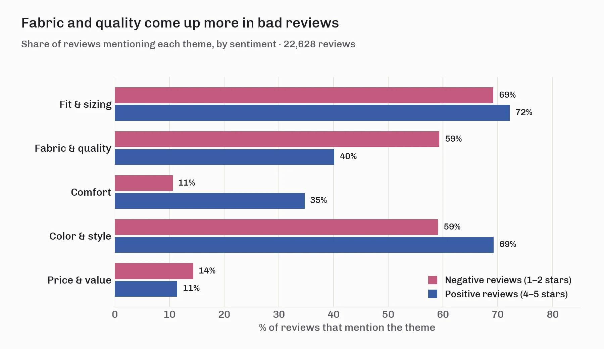
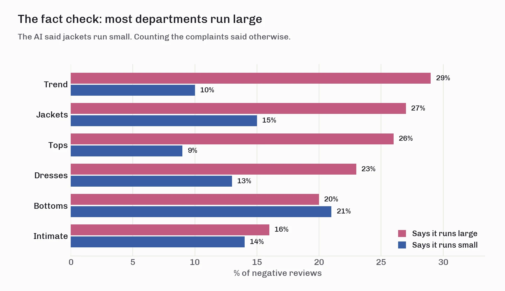

AI review insights tool
Python, pandas, regex, a local AI model
Apparel brands get thousands of reviews and no time to read them. I built a pipeline that tags 22,628 clothing reviews by theme, then sends samples from each department to an AI model running on my own laptop, which writes short reports: top complaints, what customers love, and one recommendation.
The hard part: the AI said jackets run small. I added a code-based check that counts “too small” versus “too large” complaints, and the data said they run large. The final design: code handles the numbers, AI handles the text, and a person reviews both.
Why it matters: a brand could fix fabric quality first, and update size guides in departments that run large, instead of guessing from a few angry reviews.

